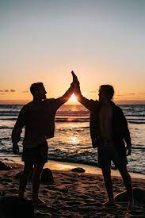

John and Jane met on a backpacking adventure in Nepal. John, a former sheep shearer, went on the trip to get some clarity about his next adventures in life. Jane — a Peloton instructor — went on the trip to explore the landscape in Nepal.
While on the trip, John and Jane realized that they had one common love — the love for hiking and the love for being outdoors.
Returning back to their home state of Oklahoma, John and Jane hatched a plan to launch a retail store centered around their passions.
While John handled the sourcing of goods and customer service, Jane focused on the web + e-commerce side of the business, building this website in the best design platform on the web — Webflow!
In 1989, John and Jane Doe officially launched Acme Outdoors, the premiere store for outdoor enthusiasts around the state.
To this day, John and Jane return to Nepal yearly to ensure that they never forget their roots and where they came from.
